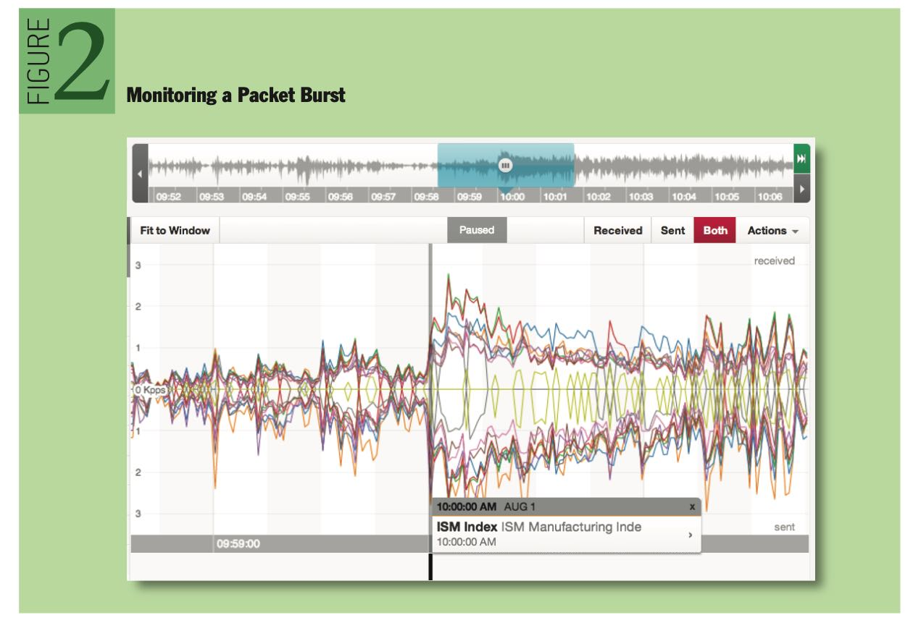
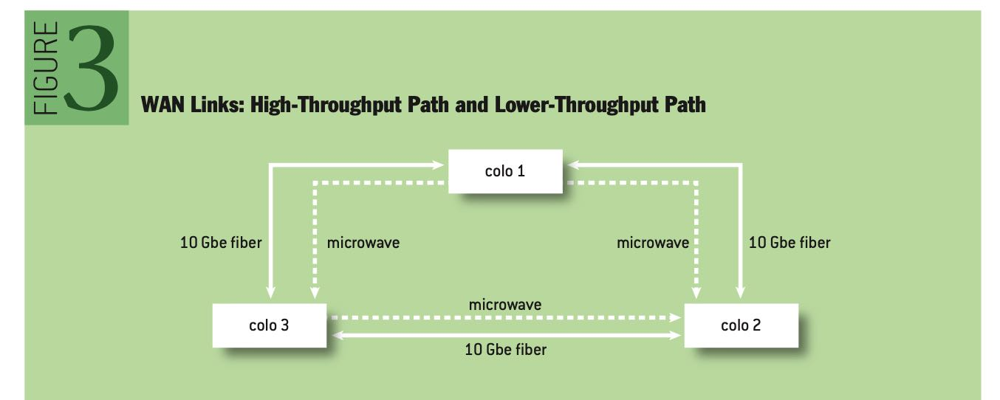
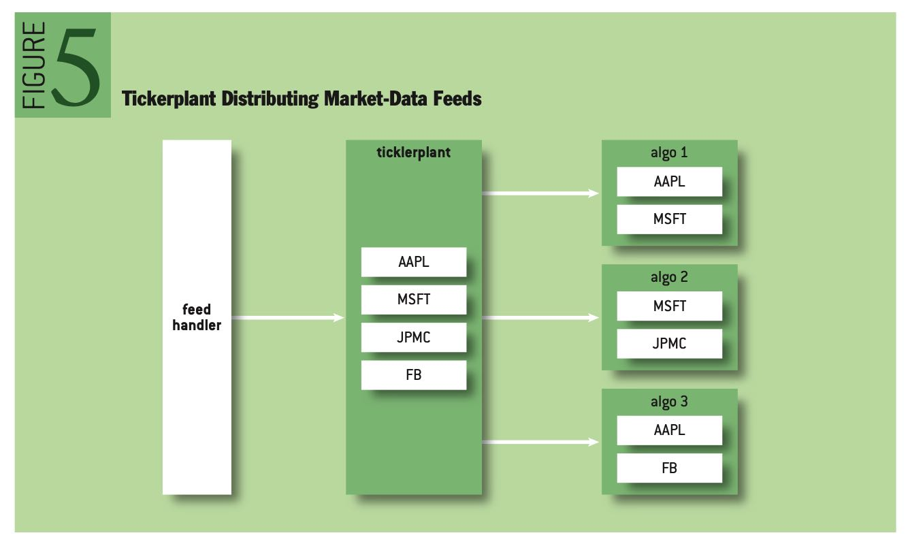
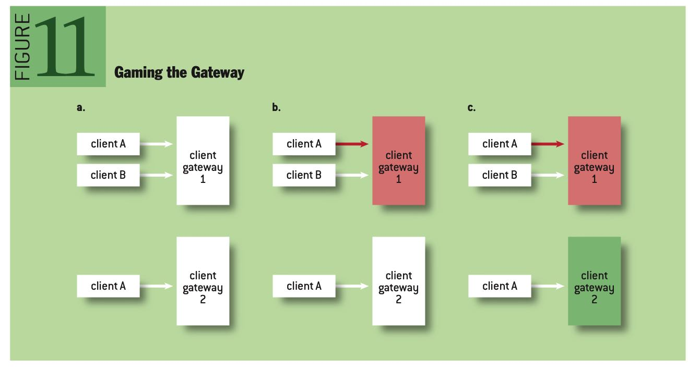

Barbarians at the Gateways
https://queue.acm.org/detail.cfm?id=2536492
HFT对于延迟的要求是非常高的，6个月内tick-to-trade延迟从250ms下降到了50ms，这个比摩尔定律发展还要迅速。也就是说，如果6个月内如果延迟没有办法下降1/5的话，那么接下来时间就没有办法盈利。
HFT (high-frequency trading) systems operate and evolve at astounding speeds. Moore’s law is of little comfort when compared with the exponential increase in market-data rates and the logarithmic decay in demanded latency. As an example, during a period of six months the requirement for a functional trading system went from a “tick-to-trade” latency of 250 microseconds to 50. To put that in perspective, 50 microseconds is the access latency for a modern solid-state drive.
HFT可以认为是计算机科学/系统编程最具挑战的工作，它不是用一个绝对标准来衡量的，而是要不断地比别人好更好competitive advantage. 性能上至少要达到1M QPS, 并且没有任何premature optimization一说。
I would argue that the computational challenges of developing and maintaining a competitive advantage in the exchange business are among the most difficult in computer science, and specifically systems programming. To give you a feeling of scale, the current exchange technology is benchmarked in nightly builds to run a series of simulated market data feeds at 1 million messages per second, as a unit test. There is no such thing as premature optimization in exchange development, as every cycle counts.
HFT行业就业的人都多来自于顶尖院校的PhD(not MBA). 现在数字化交易占据了70%以上的交易市场。并且整个社区都在不断地提升这个交易性能，比如可以购买到定制化的ASIC来处理market data, 将延迟降低740ns. （整个社区都在不断push limits of physics)
The goal of this article is to introduce the problems on both sides of the wire. Today a big Wall Street trader is more likely to have a Ph.D from Caltech or MIT than an MBA from Harvard or Yale. The reality is that automated trading is the new marketplace, accounting for an estimated 77 percent of the volume of transactions in the U.K. market and 73 percent in the U.S. market. As a community, it’s starting to push the limits of physics. Today it is possible to buy a custom ASIC (application- specific integrated circuit) to parse market data and send executions in 740 nanoseconds (or 0.00074 milliseconds).4 (Human reaction time to a visual stimulus is around 190 million nanoseconds.)
作者从2004年到2009年的观察是这样的：tick-to-trade的延迟从10ms下降到了1ms并且尝试接近到250us. 这是一个竞争非常激烈的行业，赢者通吃，更新换代只有几周的时间。作者还给了关于tick-to-trade的延迟是如何计算的。
This is important as it meant we could start with a tractable goal: build an automated market-making system that executes trades in under 10 milliseconds on a 3.2-GHz Xeon (130 nm). By 2004, this was halved to 5 milliseconds, and we were armed with a 3.6-GHz Nocona. By 2005 we were approaching the one-millisecond barrier for latency arbitrage and were well into the overclocking world. I remember bricking a brand-new HP server in an attempt to break the 4.1-GHz barrier under air.
By 2005, most shops were also modifying kernels and/or running realtime kernels. I left HFT in late 2005 and returned in 2009, only to discover that the world was approaching absurdity: by 2009 we were required to operate well below the one-millisecond barrier, and were looking at tick-to-trade requirements of 250 microseconds.
Tick to trade is the time it takes to:
- Receive a packet at the network interface.
- Process the packet and run through the business logic of trading.
- Send a trade packet back out on the network interface.
上面提到了整个社区都是在不断地push limit的，包括软件技术(bypass kernel), 硬件技术(交换机FPGA), 以及整合服务(messaging, market-data cpature, networking). 模型有效周期的半衰期在3-6个月，1年内估计就会完全失效。
To do this, we used realtime kernels with bypass drivers (either InfiniBand or via Solarflare’s Onload technology). At my shop, we had begun implementing functionality on the switches themselves (the Arista switch was Linux based, and we had root access). We must not have been alone in implementing custom code on the switch, because shortly after, Arista made a 24-port switch with a built-in FPGA (field-programmable gate array).1 FPGAs were becoming more common in trading—especially in dealing with the increasing onslaught of market-data processing.
Software companies (often started by former HFT traders) were now offering amazing solutions for messaging, market-data capture, and networking. Perhaps as a result of the inevitable lowering of the barriers to entry, HFT was measurably harder by 2010. Most of our models at that time were running at half-lives of three to six months.
作者感觉这种激烈的竞争有点令人窒息，比喻是这样的：一个策略发现出来，你只有几周的时间去使用它赚钱，之后就会被抹平，然后需要重新开始。
I remember coming home late one night, and my mother, a math teacher, asked why I was so depressed and exhausted. I said, “Imagine every day you have to figure out a small part of the world. You develop fantastic machines, which can measure everything, and you deploy them to track an object falling. You analyze a million occurrences of this falling event, and along with some of the greatest minds you know, you discover gravity. It’s perfect: you can model it, define it, measure it, and predict it. You test it with your colleagues and say, ‘I will drop this apple from my hand, and it will hit the ground in 3.2 seconds,’ and it does. Then two weeks later, you go to a large conference. You drop the apple in front of the crowd…and it floats up and flies out the window. Gravity is no longer true; it was, but it isn’t now. That’s HFT. As soon as you discover it, you have only a few weeks to capitalize on it; then you have to start all over.”
接下来作者谈到了一些HFT的技术栈情况，首先硬件上就需要做到collocation, 把自己的服务器放在离exchange/data center越近的地方越好，如果相隔10km那么就会花费49us的传输时间，并且为了保证公平，大家的缆线都是包装在一起的，和exchange服务器是完全相同的距离。
The first step in HFT is to place the systems where the exchanges are. Light passing through fiber takes 49 microseconds to travel 10,000 meters, and that’s all the time available in many cases. In New York, there are at least six data centers you need to collocate in to be competitive in equities. In other assets (foreign exchange, for example), you need only one or two in New York, but you also need one in London and probably one in Chicago. The problem of collocation seems straightforward:
- Contact data center.
- Negotiate contract.
- Profit.
It’s also important to ensure you get the right collocation. In many markets, the length of the cable within the same building is a competitive advantage. Some facilities such as the Mahwah, New Jersey, NYSE (New York Stock Exchange) data center have rolls of fiber so that every cage has exactly the same length of fiber running to the exchange cages
局域网内交换机一个最大的问题，就是会出现correlated burst. 一个很小的操作，会造成很多连锁反应，带来连锁操作，网络packets会不断地被放大。下面是一个packet burst的例子。

多个交易所之间的数据传输有两种方式：fiber（光纤）和micromave（微波），前者解决的是大吞吐问题，而后者解决的是低延迟问题（光纤内部折射导致路程增加而延迟增加）。
a high-throughput path and a lower-throughput fast path. For the high-throughput path, private point-to-point fiber—10GbE (gigabit Ethernet) is preferred. For the fast path, each location allows for options. In the New York metro area, both millimeter and microwave solutions are available. These technologies are commonplace for HFT fast-path links, since the reduced refractive index allows for lower latency.

软件上有两个组件feed handler以及ticket plant, 前者是生成ticket order信息，而后者则是将ticket order信息推送到不同的app上。整个结构如下图，为了加速feed的解析， 也使用了FGPA电路，整个解析和处理过程可以在25us以下。
The feed handler is often the first bit of code to be implemented by an HFT group. As shown in figure 4, the feed handler subscribes to a market-data feed, parses the feed, and constructs a “clean” book. This is traditionally implemented on an FPGA and has now become a commodity for the industry (http://www.exegy.com). Most feed handlers for U.S. equities are able to parse multiple market-data feeds and build a consolidated book in less than 25 microseconds.

交易所的技术和HFT差别不大，但是更加注意安全性。比如network上不允许做snoop, gateway的设计上也会监视每个client是否存在恶意操作（因为gateway是共享的，如果client A恶意操作，可以影响到上面共享的client B).
Exchange networking is as challenging as HFT networking but also has a deeper focus on security. Information arbitrage, or the practice of gaining information about a market that is not directly intended for the recipient, is a major concern. An example of information arbitrage is when an exchange participant “snoops” the wire to read packets from other participants. This practice is easily thwarted with deployment of VLANs for each client.
The gateway is the first exchange subsystem that client flow encounters. Gateways have evolved over the years to take on more responsibility, but at the core they serve as feed handlers and tickerplants. The gateway receives a client request to trade (historically in the FIX format, but as latency became paramount, exchanges have switched to proprietary binary protocols). It then translates the request to a more efficient internal protocol, and routes the request to the appropriate underlying exchange matching engine.
Gateways are often shared across customers, as a gateway for each and every exchange participant would likely require a massive data-center footprint. As such, gateways must be closely monitored for malicious manipulation. An example of gateway “gaming” is shown in figure 11. In figure 11a, client A is connected to two distinct gateways. In 11b, Client A induces extreme load on Gateway 1, causing Client B traffic to slow. In 11c, Gateway 1, not under load, slows all attempts for Client B to cancel resting markets. Client A has an advantage with the self-made fast path.

Gateway在传输协议上和格式协议上都有许多定制化的实现
Traditionally the Order Gateway (which receives client requests to trade) and the Market Data Gateway (which distributes market-data feeds) are two separate systems, and often two separate networks. For market-data distribution, two methods are common: UDP (User Datagram Protocol) Multicast for collocated customers, and TCP (Transmission Control Protocol) for noncollocated customers. Customization takes place here as well (for example, Nasdaq’s SoupTCP9). In some markets (for example, FX), all market data is distributed over TCP in FIX (Financial Information Exchange). For the other markets, data is often distributed over UDP in a binary format or an easy-to-parse text format. The predominant two binary formats are ITCH6 and OUCH,8 and both sacrifice flexibility (fixed-length offsets) for speed (very simple parsing).